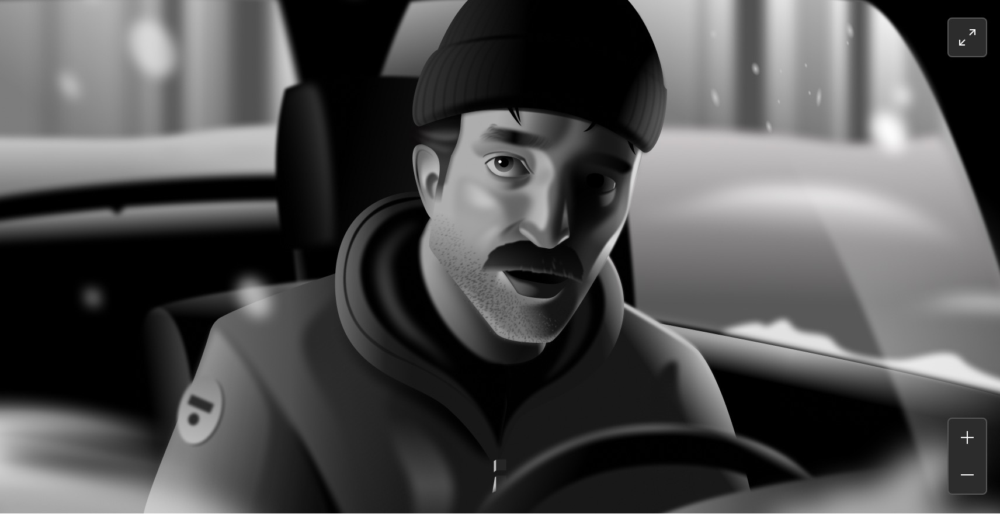
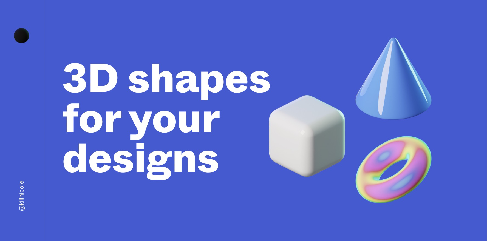
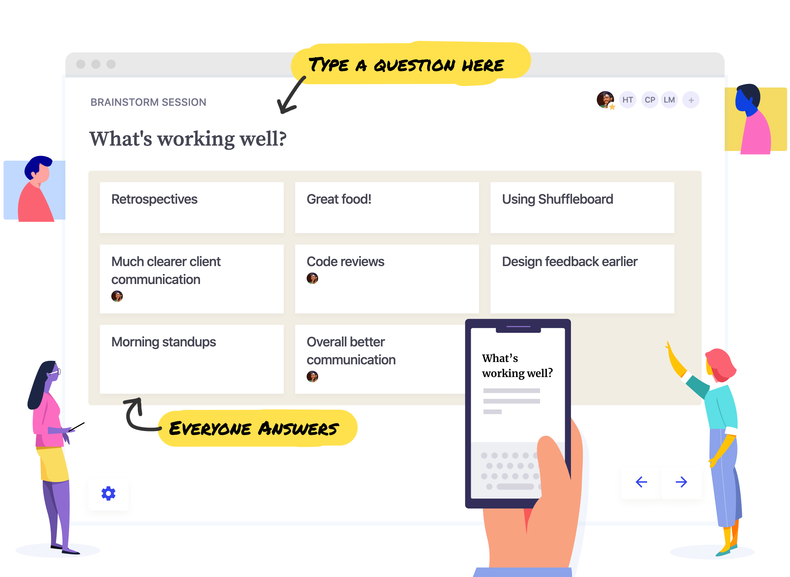
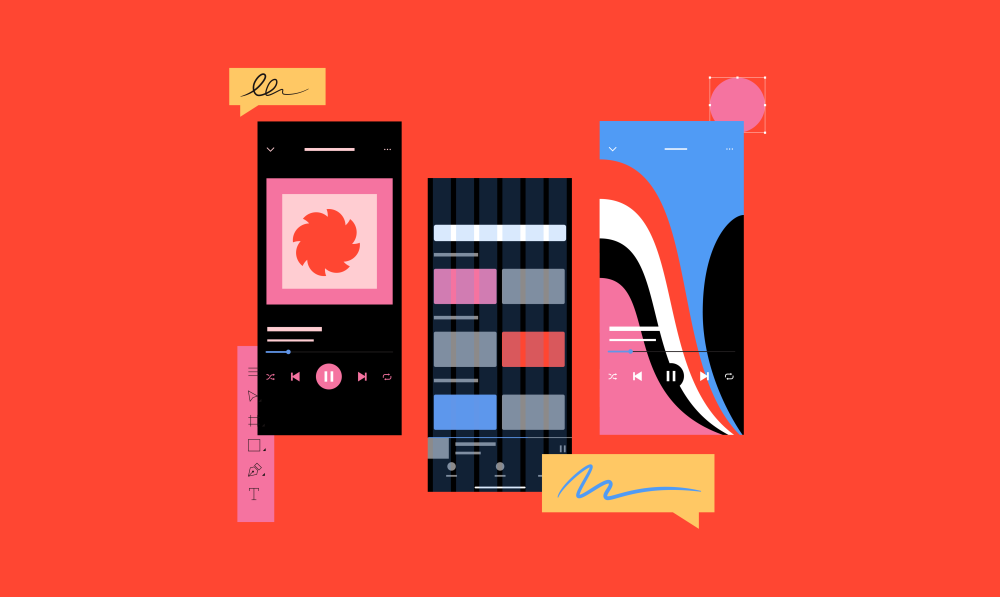
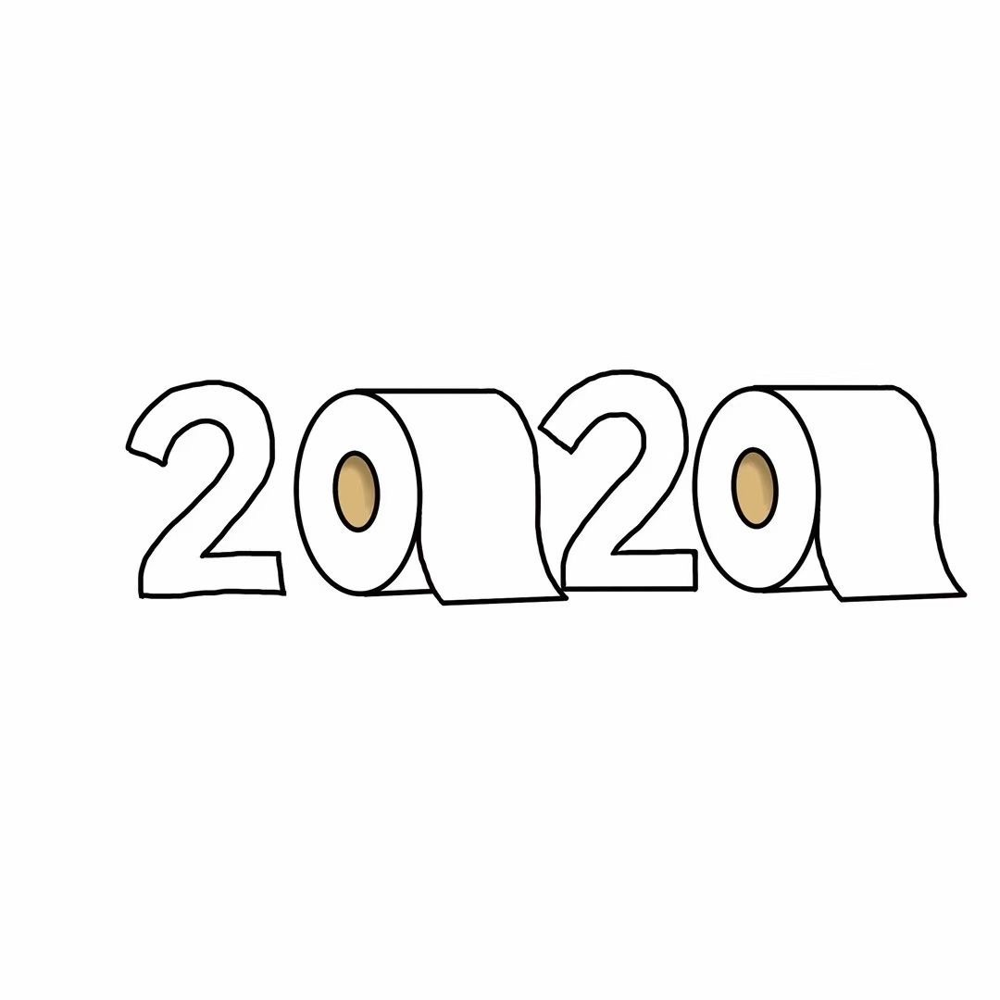
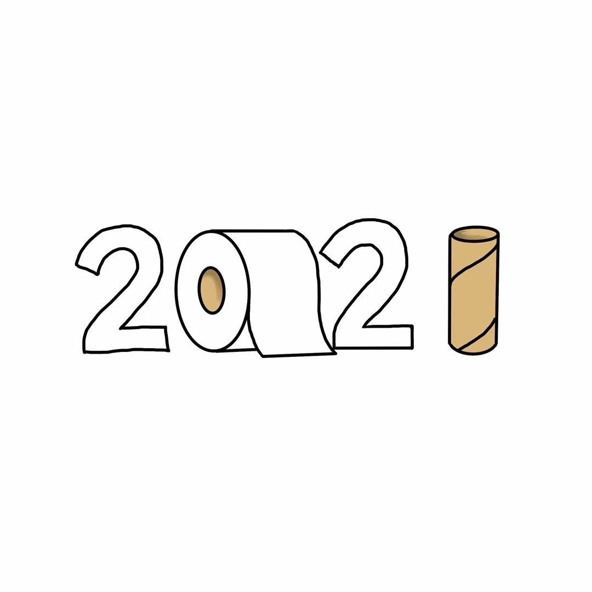
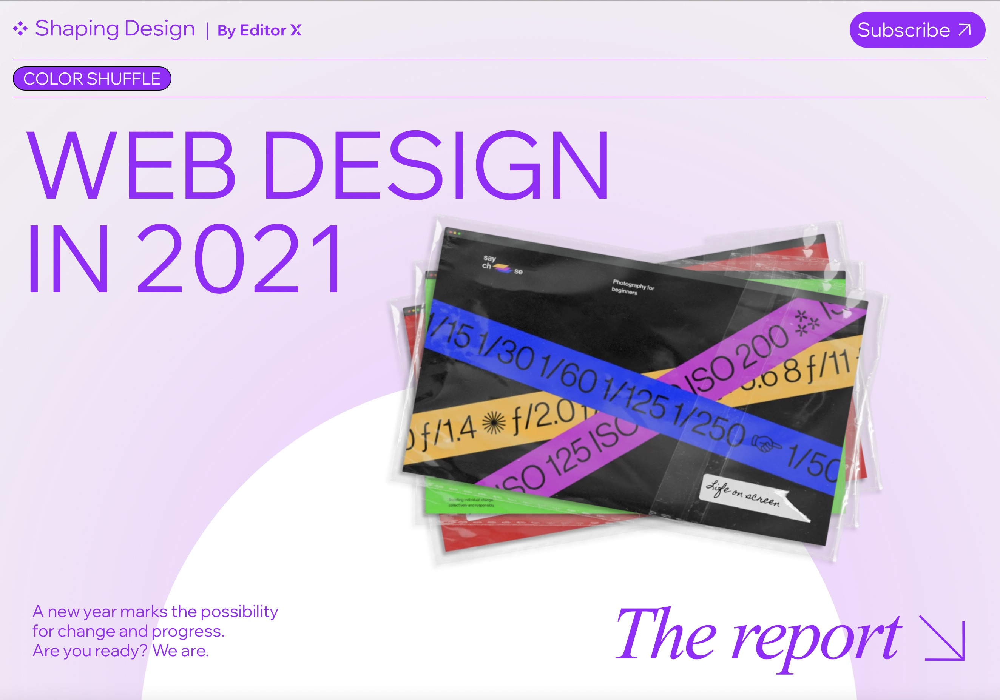
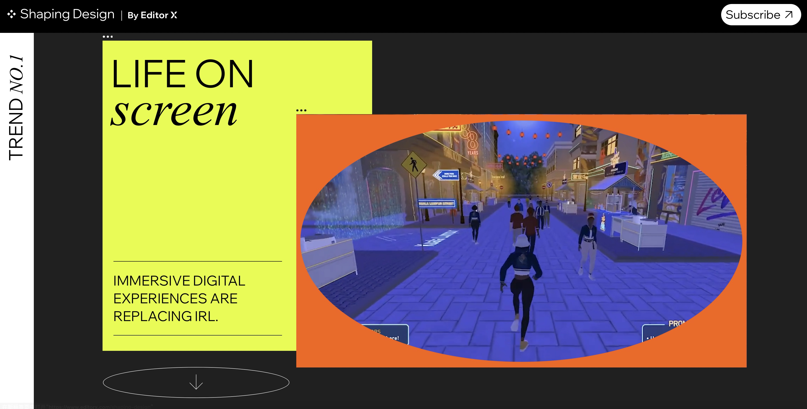

设计周刊 Design Weekly #39
📕 设计资源
Illustration
https://www.figma.com/community/file/916016379245914377
Netflix 的品牌设计负责人 Martin Bekerman，用 figma 画的插画，看着精细程度，有没有震撼到~

3D shapes
https://www.figma.com/community/file/917777039353073016
Figma 的3D 插件，包含了 9 中不同的 3D 形状，每个都有 10 种颜色变化。

Shuffleboard - 远程协作工具
用于远程讨论（如研讨会、会议和回顾）的反馈工具。

📗 设计文章
开言英语品牌提升探索
https://mp.weixin.qq.com/s/_1niii8sBidcRGLOmKdqaQ
字节产品真的是各个赛道都能看到~开言英语的设计团队近期重新思考了品牌建设、传播与记忆的关键点，对品牌的设计表达和策略进行了全面的升级。
Ask Spotify Design 02
https://spotify.design/article/ask-spotify-design-02
Spotify 答疑解惑专栏第 2 弹，来看看本期 Spotify 的设计师们发表了哪些关于设计和工作的看法。

📙 设计灵感
我们期盼着2021到来，好让2020年滚开
https://www.topys.cn/article/31299
今年是可怕的/疯狂的/与众不同的一年……相信这句话你已经看烦了。 快看这些漫画家和创意人们，对2020年的嫌弃已经溢于言表了。

weekly039-

WEB DESIGN IN 2021
https://www.topys.cn/article/31298
新冠病毒又变种了，人们的生活方式受疫情影响也改变了很多，不管是工作、生活、娱乐，都更依赖网络了。
作为业内知名的创作平台，Editor X为设计师和互联网业内人士提供了大量的综合业务解决方案，着眼于电子商务，专业营销和搜索引擎优化工具的他们，看待潮流的角度往往偏商业化，而这也让他们的报告对商业人士的参考价值更大。
Editor X最近发表了一份关于2021网站设计趋势的报告，就为我们揭露了未来网站设计新的思考方向。诸如：完全客制化的界面将反应用户的风格与身份、沉浸式数码体验正取代现实生活等。

